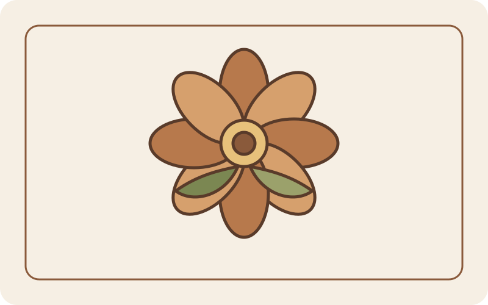
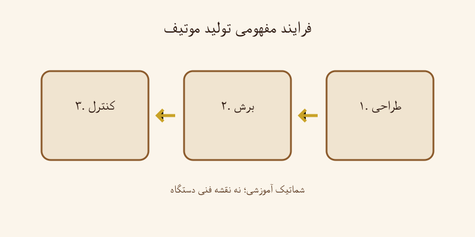
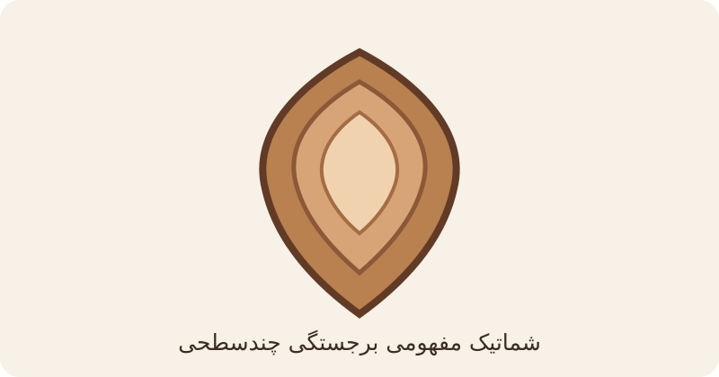
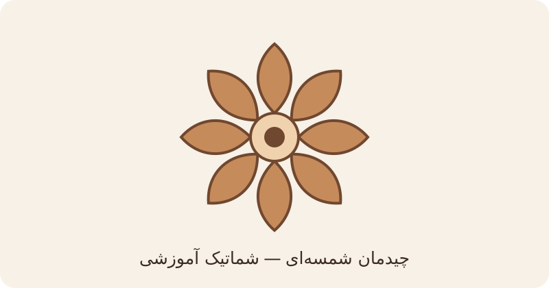
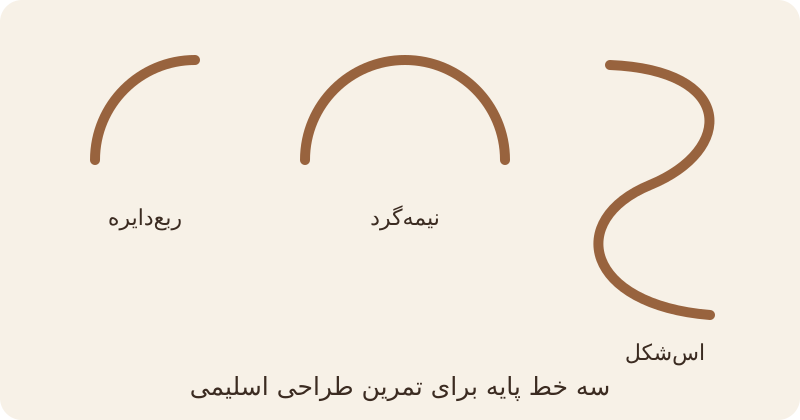
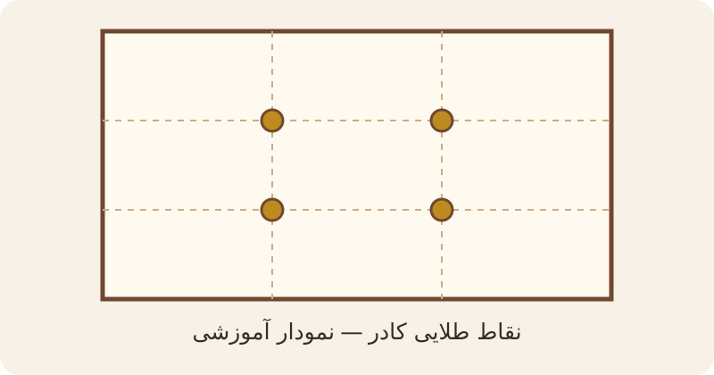
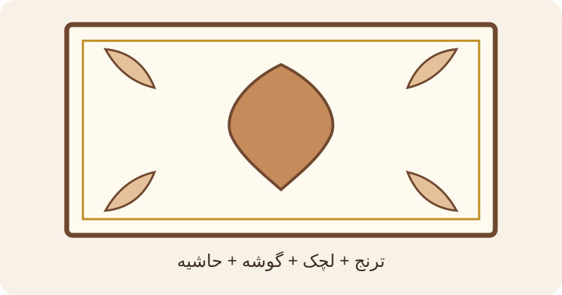

تکنیکهای پایه و ساختاری
نوارکشی / دورگیری
قرار دادن نوارهای چرمی در لبهها و اطراف قطعات برای ایجاد مرز مشخص و استحکام ساختاری.
اجرای موتیف
موتیف قطعهای تزئینی و مستقل از چرم است که از نظر شکلی بسیار زیبا طراحی شده و گاه به آن «گل» نیز گفته میشود. معمولاً با دستگاه پرس صنعتی یا سیانسی لیزر از چرم تهیه میشود و گاه شامل نقش برجسته حکاکیشده نیز هست. ویژگی اصلی موتیف، تکرارپذیری آن است؛ یعنی میتوان آن را بر اساس ترکیببندی مورد نظر، به صورتهای گوناگون در کنار یکدیگر یا با چیدمانهای متنوع (از جمله شمسهای) در طرح به کار برد.
بافت یا پیچ
«بافت تریشه» و «پیچ تریشه» دو عنوان اجرایی مرتبط اما متمایزند. در این روشها از نوار باریک تریشه، معمولاً نزدیک به ۱ میلیمتر، برای ایجاد جزئیات ساختاری و تزئینی استفاده میشود.
تریشه
نوار باریک بریدهشده از چرم کفی که در بافت، پیچ و برخی جزئیات تزئینی استفاده میشود. برش دستی و مکانیزه هر دو امکانپذیر است.
تکنیکهای قوامآوری
مشتهزنی دو مرحلهای
- مرحله اول: پس از نصب هر قطعه یا نوار — برای اتصال اولیه و فشردهسازی.
- مرحله دوم: در حالت دونَم (پس از رزین زیرکار) با ضربات بسیار آرام — برای قوام نهایی و پختگی سطح.
رزین زیرکار
محلول تثبیتِ زیرکار که در این پروژه با عنوان «رزین زیرکار» شناخته میشود، از ترکیب یک واحد چسب چوب با شش واحد آب (۱:۶) تهیه میشود. نسبت و شیوهٔ مصرف باید در تمام مراحل کار یکسان و کنترلشده باشد.
زمان اعمال: پس از تکمیل ساختار معرق و مشتهزنی اولیه، پیش از رسیدن به مرحلهٔ مشتهزنی دوم.
دلیل و هدف اعمال: پوششدهی کامل سطح معرق جهت نفوذ در الیاف چرم، تثبیت ساختار، آمادهسازی سطح برای مشتهزنی نهایی و افزایش دوام و انسجام اثر.
پس از اعمال یکنواخت محلول، باید تا رسیدن چرم به حالت «دونَم» (نیمهخشک) صبر کرد؛ سپس مشتهزنی مرحلهٔ دوم با ضربات کنترلشده و آرام انجام میشود. پس از آن، خشکشدن کامل پیش از رنگآمیزی ضروری است.
قوامآوری
رساندن چرم به حالت منسجم، فشرده و پخته از طریق فشار مکانیکی و کنترل رطوبت (بهویژه با کمک رزین زیرکار و مشتهزنی در حالت دونَم).
تکنیکهای تزئینی و تکمیلی
خالزنی طلایی
خالزنی طلایی با خمیر دورگیر طلایی ویترای، پس از رنگآمیزی و پیش از پوشش نهایی انجام میشود؛ سطح رنگشده باید پیش از این مرحله به اندازهٔ کافی خشک شده باشد.
رنگآمیزی
رنگآمیزی تخصصی پس از تکمیل ساختار، تثبیت و خشکشدن کامل زیرکار انجام میشود. انتخاب نوع رنگ، رقیقکننده و ابزار پاشش باید با جنس چرم، آزمون نمونه و دستورالعمل مواد مصرفی سازگار باشد.
چسب آهن
چسب آهن برای اتصال سطوح چرمی به زیرکار یا اتصال اجزای مناسب بهکار میرود. در روش معمولِ چسبهای تماسی، هر دو سطح مطابق دستور سازنده آماده و آغشته میشوند؛ پس از رسیدن چسب به وضعیت مناسب اتصال، سطوح با فشار یکنواخت به هم میچسبند. برای محصول مشخص، دستور روی بستهبندی مقدم است.
سه خط پایه اسلیمی
روش ابداعشده برای ترسیم عناصر اصلی اسلیمی:
- خط ربعدایره (منحنی کامل)
- خط نیمهگرد
- خط اسشکل
این سه خط پایه، امکان ترسیم ترنج، لچک، گوشه، حاشیه و سایر عناصر را بهصورت علمی و قابل آموزش فراهم میکنند.
شماتیکهای آموزشی
شماتیکهای برداری آموزشی برای توضیح مفاهیم کلیدی؛ این نمودارها تصویر آثار واقعی هنرمند نیستند.

موتیف تکقطعه (زیبایی شکلی و گل)

تولید با پرس صنعتی / سیانسی لیزر

موتیف با نقش برجسته حکاکیشده

چیدمان شمسهای و تکرارپذیری

سه خط پایه اسلیمی

نقاط طلایی کادر + Super Gold Point

ترکیببندی کلاسیک (ترنج + لچک + گوشه + حاشیه)
این نمودارها شماتیکهای مفهومی آموزشیاند و نباید بهعنوان عکس اثر واقعی یا نمونه مستند تاریخی معرفی شوند.